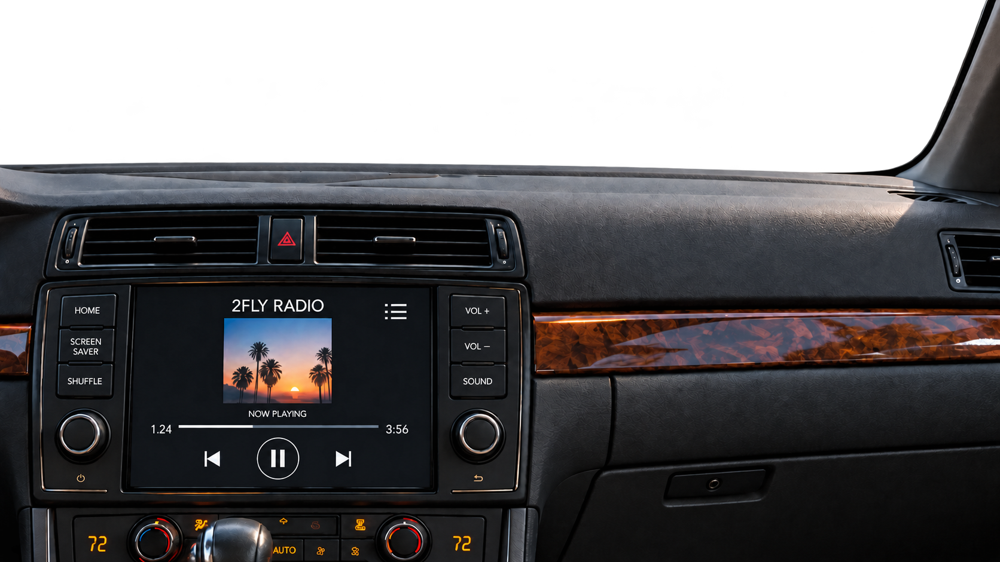

Youngstown road footage hasn’t been added yet.
The four-song listening session is ready.

2FLY RADIO
2FLY RADIOArtwork unavailable
01 / 04
I Was Away
2Fly Keith Logan
READY WHEN YOU AREJUST RIDE. JUST LISTEN.
I Was Away
2Fly Keith Logan
SOUND Original
0:000:00
IN ORDER65%
HI-FI STEREO
DUAL CLIMATEAUTO · COMFORT❯ ❯ ❯
2FLY RADIO · THE PASSENGER SEAT
Ride with me.
Four records. Your seat is saved.
Begins with “I Was Away”